How to build bot with flow builder
In this blog, I will show you how to create Facebook Messenger bot and Instagram DM bot with ChatPion Flow Builder. Please follow the instructional blog step by step to create an interactive Facebook Messenger bot or Instagram DM bot.
To build a bot, First, go to the dashboard of the ChatPion. Now click on the Bot manager option at the left sidebar of the dashboard.
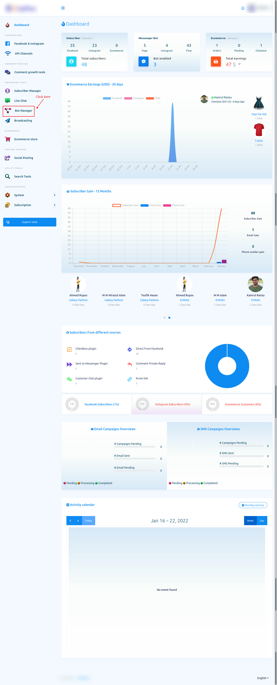Bot Manager
And instantly, the Bot Manager page will appear. At the top of the page, you will see the profile of your Facebook account. If you have imported one more Facebook Profile, you can change the Facebook profile.
To build a bot on the Facebook page, select the radio button to Facebook. On the other hand, to build a bot on Instagram, select the radio button to Instagram.
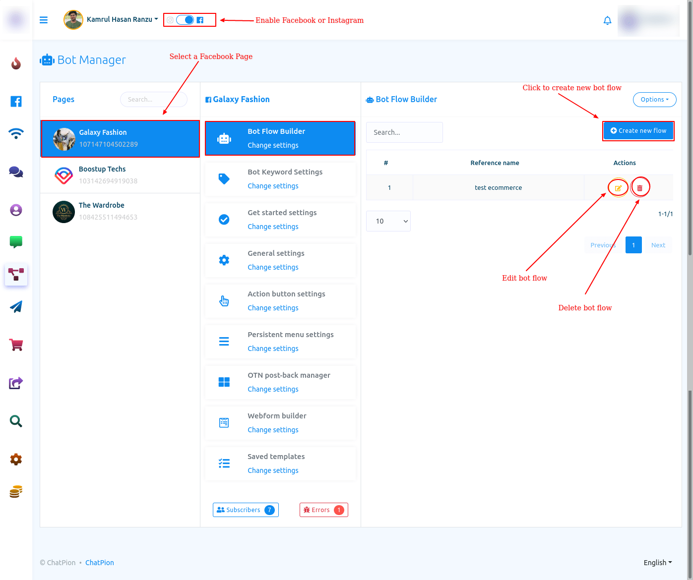Visual Flow Builder Editor
Well, to build a bot, click on the “Create New Flow” button. And instantly, the editor of the Flow Builder will appear. The editor is divided into two parts – Doc-menu and editor. On the Doc-menu, all the components are gathered together. To build a bot, you have to drag components from the Doc-menu and drop them on the editor. Then you have to configure the components and connect them to each other. On the Doc-menu, there are 14 components.

Start bot flow
On the Editor, you will see an element called start bot flow. This component is essential to building the bot. Double-click on the Start bot Flow element and the Right Sidebar called Configure Reference will appear with two fields – Title and Choose Labels. In the title field, give a title for the bot.
And in the Choose labels field, you have to select labels from a drop-down menu of different fields. You can select multiple labels in the Choose labels field. Now click on the Done button and the information will be added to the element.
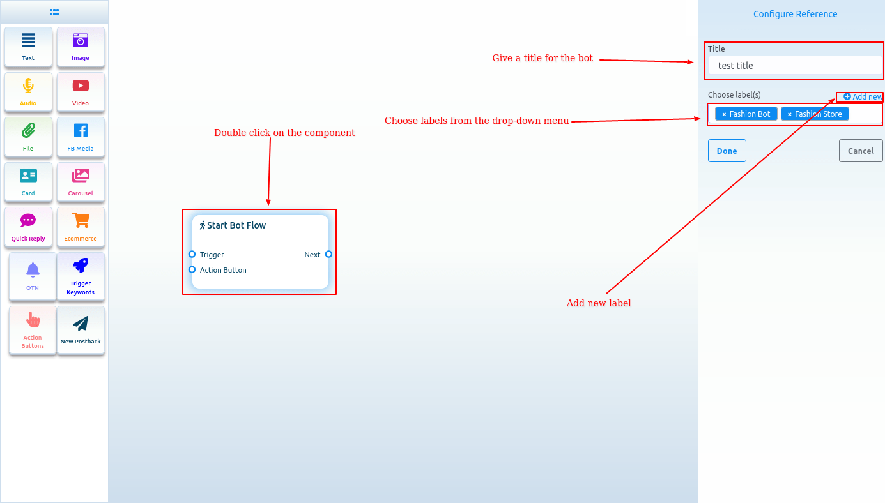Add new label
And from the Choose labels field, you can add a new label. Just write down the name of the label and press enter.
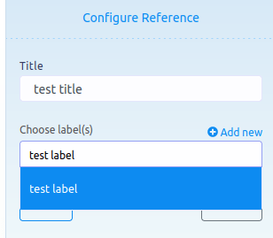Trigger keywords
Now drag the trigger keywords element and drop it on the editor. Now double-click on the component and a sidebar called configure Trigger will appear. In the field, you have to provide comma-separated keywords. When a user writes one of the keywords, the bot will start. Also, you can select a matching type – Exact keyword match and String match. Then click on the Done button. And the keywords will appear on the component.
Now connect the Trigger Keywords component with the Start Bot Flow component.
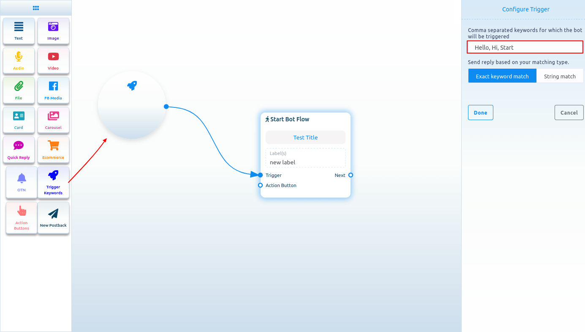Add components without dragging from Doc-menu
You can also add components without dragging the component from the Doc-menu and dropping it on the editor. From the next output of any component, drag the cursor and drop. And instantly a menu of the different components will appear. And from the menu, select a component and the component will appear on the editor connected with the mother component.
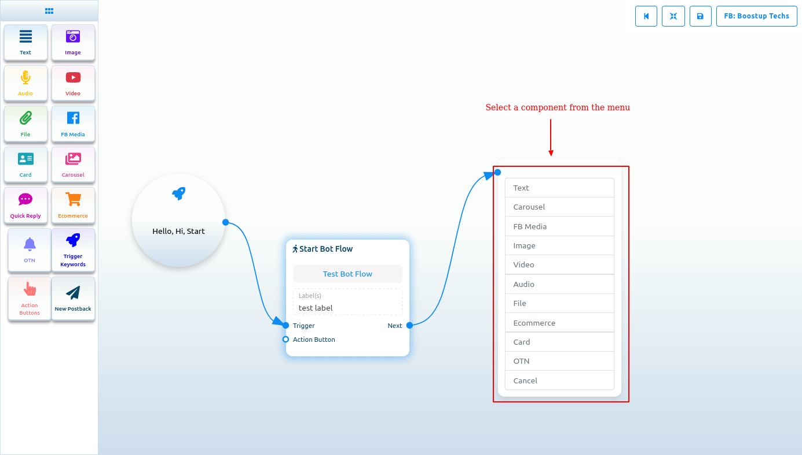If you drag your cursor from the button output of any component and drop it on the editor, then the button component will appear on the editor connected with the mother component.
NB. The Button component is not present in the Doc-menu.
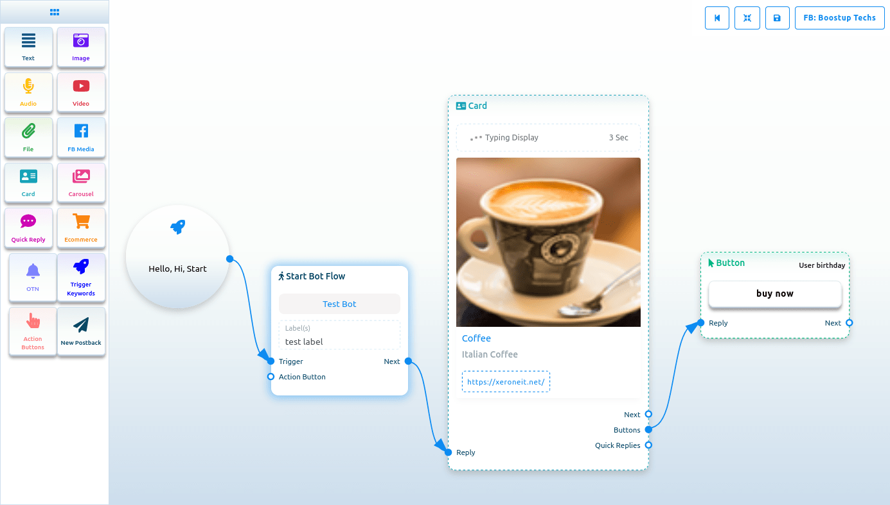Text
If you want to build a bot with a text element, drag the Text Component and drop it on the editor. Now double-click on the component and a sidebar called Configure Text Message will appear with a text field. In the text field, you have to provide your reply message. You can include the first name or the last name of the user in the reply message.
You can also enable typing on display by turning on the radio button. Then you can select the delay time in reply in seconds.
Now click on the Done button and the information will appear on the component. Then connect the text component with the Start bot flow component.
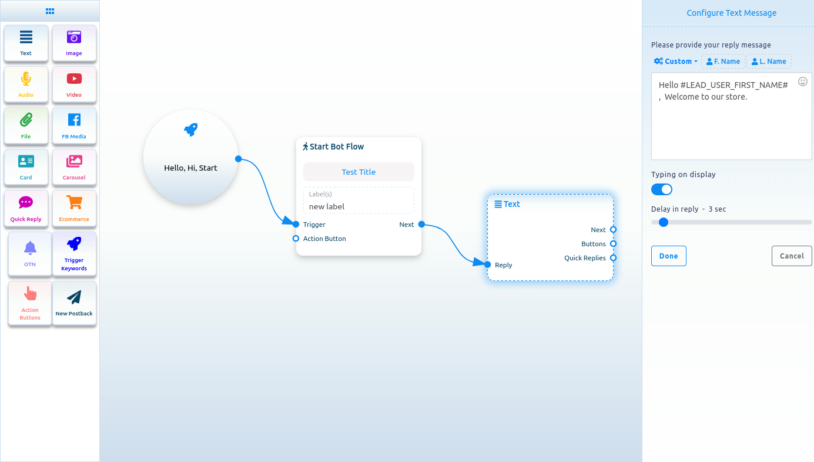Include Custom variables in the reply message
Besides, you can include custom variables in the reply message. Click on the button called custom and a drop-down menu of different variables will appear. And from the drop-down menu, select a variable. The custom variable will be replaced by the actual value before sending it.
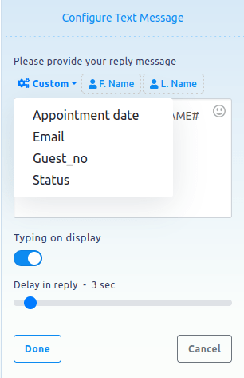Image, Audio, Video, and File component
Likewise, you can add Image, Audio, Video, and File components. For these components, you have to upload an image, audio, video, and file respectively. Then you have to connect the components with other components.

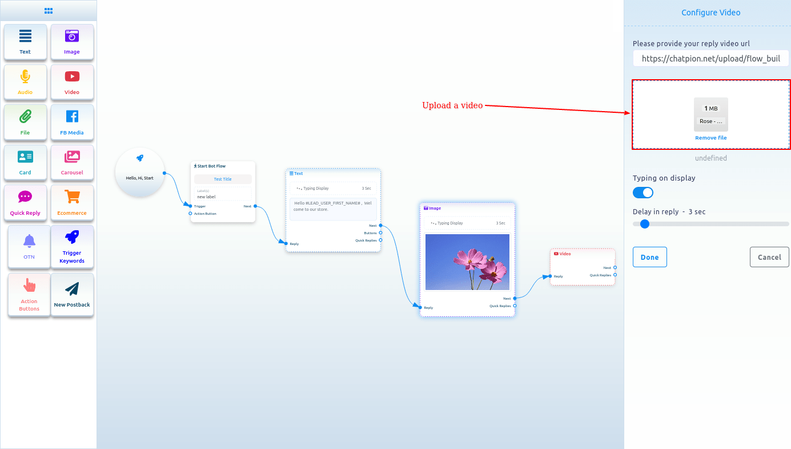
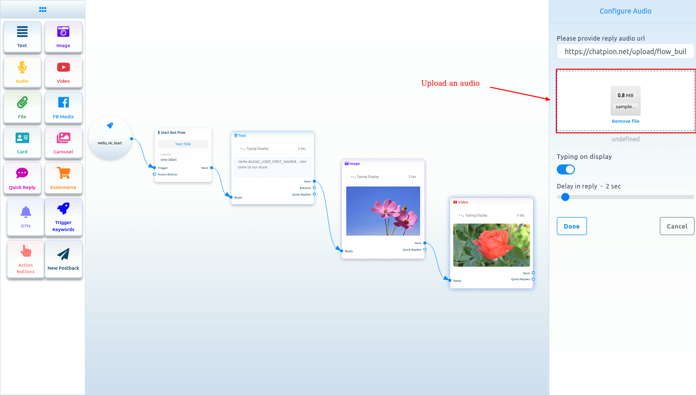
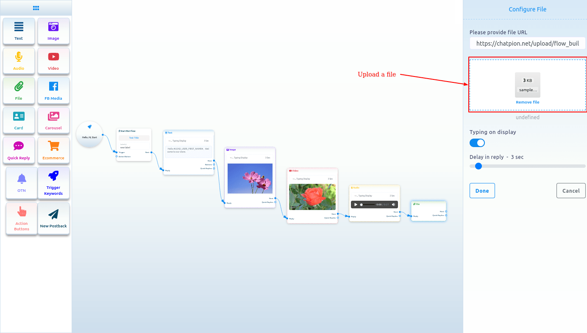
FB Media
To add FB Media component, drag the FB Media component from the Doc-menu and drop it on the editor. Now double-click on the FB Media component and the right sidebar called Facebook Media URL will appear. In the Facebook Media URL field, put your Facebook Page media URL.
You can enable typing on display and select time in seconds for the delay in reply. Now click on the done button and the Facebook page media URL will appear on the component.
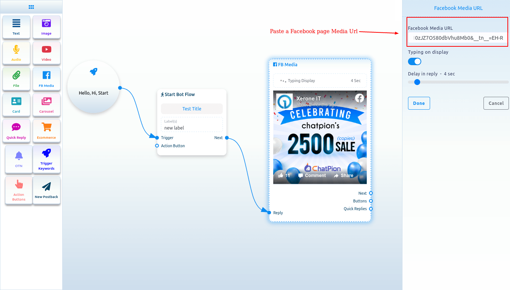Card
To add Card Component, drag the Card Component from the Doc-menu and place it on the editor. The Card component will appear with a button component. Well, now double-click on the Card component and a right sidebar called Configure Generic Template will appear. Now upload an image. After uploading an image, paste a link in the image click destination link field. When a user clicks on the image, the user will be redirected to the URL. Now write a title in the Title field and a subtitle in the Subtitle field.
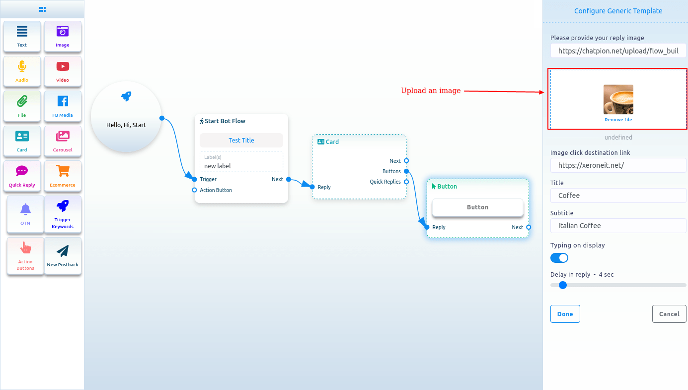Then you have to configure the Button Component
Read the following section to know how to add and configure the Button Component.
Button
To add Button component, drag your cursor from the button output of a component like the Text or Card component and drop. Instantly, the Button component will appear connected with the mother component.
And sometimes the button component automatically appear connected with other component, such as Card and Carousel component.
Now double-click on the button component and a right sidebar called configure button will appear. Now write a text in the button text field – the text will appear on the button. Then you have to select a button type from the button type field. Click on the button type field and a drop-down menu of different button types – New postback, postback, Weburl, Webview [full], Webview[compact], Webview[tall], User birthday, User email, User phone, User location, Call us, Unsubscribe, Re-subscribe, Chat with human and Chat with robot will appear.
Button types
New postback
Select New postback on the button type and click on the done button.

Configure New postback
And instantly, a new postback button will appear connected with the Button component. Now double-click on the New postback Component and the right sidebar called configure New postback will appear. Give a title for the New postback in the title field. And select labels from the Choose label field. Now click on the Done button.
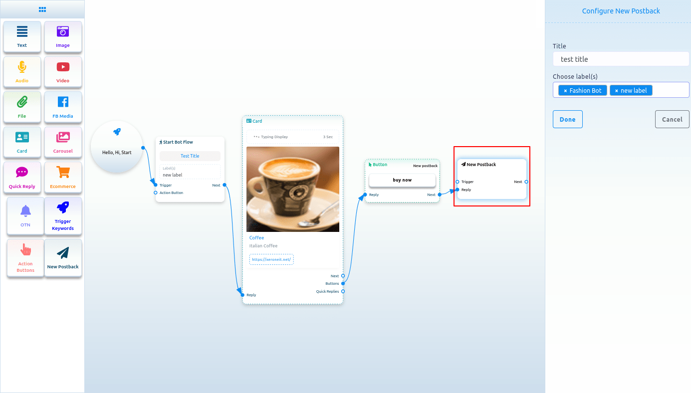Postback
If you select Postback as the button type, a field called Postback ID will appear. And from the Postback ID field, you have to select a postback id. Click on the postback id field and a drop-down menu of different postback id will appear. And from the drop-down menu, select a postback id. And click on the Done button. The postback id will appear on the Button Component.
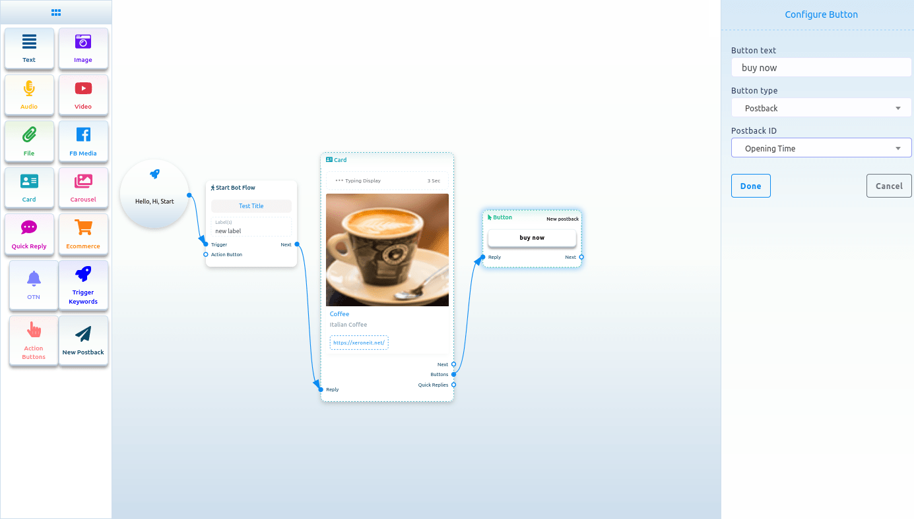Web Url, Webview[full], Webview[tall], Webview[compact]:
If you select Web Url, Webview[full], Webview[tall] or Webview[compact], another field will appear. And in the field, you have to paste an URL. Now paste a URL and click on the done button. After that, the URL will appear on the Button component.
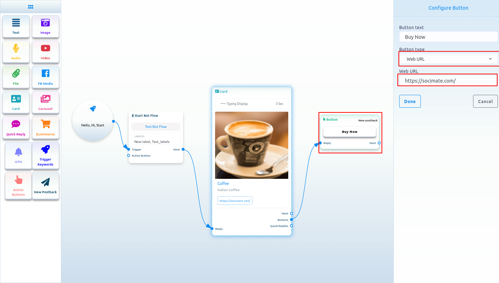Select a button type
Form the button type field, you can select User email, User birthday, User phone or User location, Unsubscribe button, Resubscribe button, Chat with human, Chat with robot. After selecting any from the button type, click on the done button. Instantly the button type will appear on the button.
Call us
Select Call us button from the drop-down menu of different button types and instantly, another field called Mobile/Phone number will appear. Now you have to provide your phone number in the field. Then click on the done button.
 Carousel:
Carousel:
Carousel
To add a Carousel component, drag the Carousel component from the Doc-menu and drop it on the editor. Instantly, the Carousel component will appear with three carousel items connected with the Carousel component and three button components connected with the three carousel components.
Now double-click on the Carousel component and the right sidebar called configure Carousel will appear. In the sidebar, you can enable typing on display and select delay in reply time in seconds. Now click on the Done button.
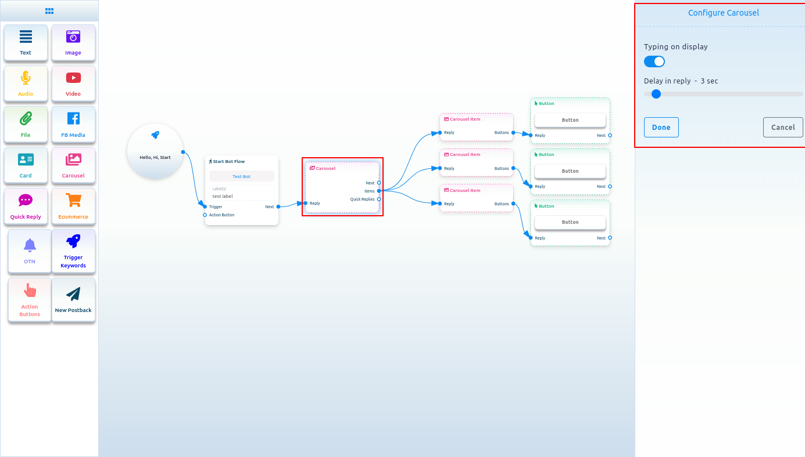Carousel Item
Now come to the carousel Item component. Double-click on the carousel Item button and the right sidebar called Configure Carousel Item will appear with some fields.
Now upload an image. After uploading an image, paste a link in the image click destination link field. When a user clicks on the image, the user will be redirected to the URL. Now write a title in the title field and a subtitle in the subtitle field. Enable the typing on display and select delay time in seconds.
Likewise, you have to configure the other two carousel items.
Now you have to configure buttons. You already know how to configure buttons.
You can add other components with the button components if you want.
Now click on the save button or press ctrl + S and your bot will be saved.
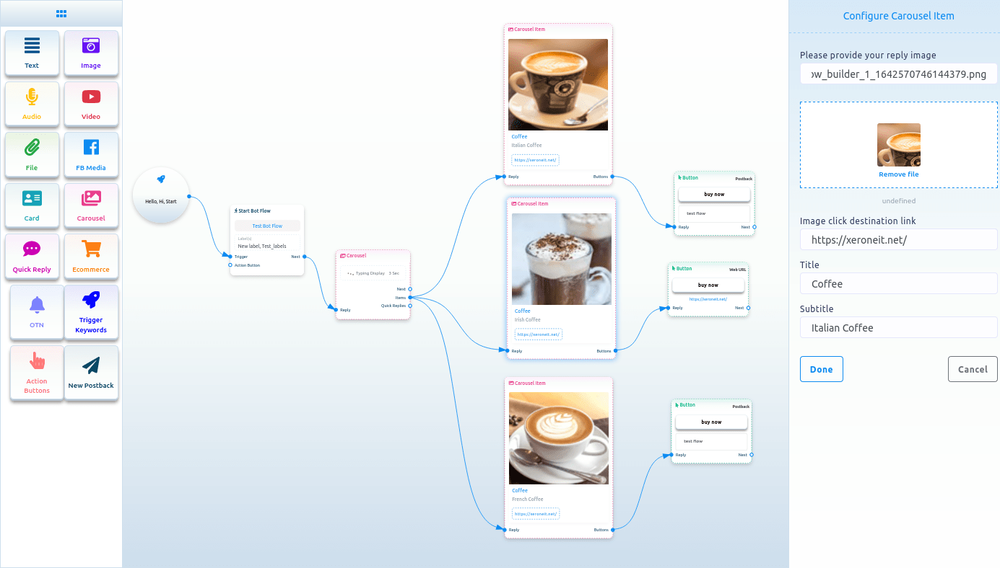Quick Reply
To add Quick reply component, drag the Quick reply component from the Doc-menu and drop it on the editor. Instantly, the Quick reply component will appear on the editor. You can also add a Quick reply component by dragging your cursor from the quick replies output of a component and dropping it on the editor.
Now double-click on the Quick Reply component and a right sidebar called configure Quick Reply will appear. Now in the quick reply type field, you have to select a quick reply type. Click on the quick reply type field and a drop-down menu of different types of quick replies – New postback, Postback, Phone, and Email – will appear.
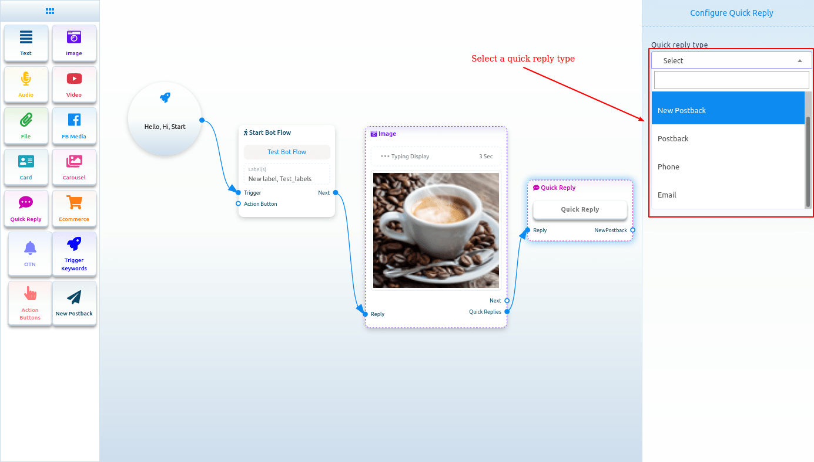New postback as quick reply type
Select new postback as the quick reply type, and instantly a field called button text will appear. Now you have to provide a text for the button in the button text field. Then Click on the done button.
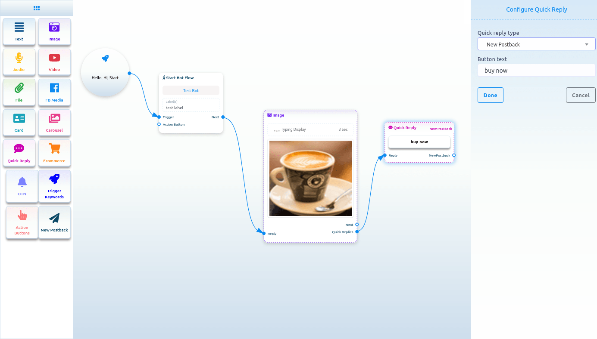 quick_reply_new_postback_component_connected.pngAnd instantly, a new postback component will appear connected with the quick reply component.
Now double click on the new postback element and the right sidebar called configure new postback will appear. Give a title for the New postback in the title field. And select label from the Choose label field. Now click on the done button.After that, you have to add another component with the next output of the New postback component.
Postback as a quick reply
If you select postback as the quick reply type, two fields – button text and postback id will appear. In the button text field, you have to write a text for the button. And from the postback id field, you have to select a postback. Click on the postback id field and a drop-down menu of different postback id will appear. And from the drop-down menu, select a postback id. And click on the Done button. And the postback id will appear on the Quick reply component
Phone as quick reply
Just select phone as the quick reply type in the quick reply type field and click on the done button. In this case, the quick reply will collect your phone number from your Facebook Profile and show in the messenger. When a user clicks on the phone number, the system will receive the phone number. And the user will get a message that the system have received your phone number.
Email as quick reply
Just select Email as the quick reply type in the quick reply type field and click on the done button. In this case, the quick reply will collect your Email address from your Facebook Profile and show in the messenger. When a user click on the phone number, the system will receive the email address. And the user will get a message that the system have received your Email address.
Ecommerce
To add Ecommerce component, drag the Ecommerce component from the Doc-menu and drop it on the editor. Instantly, the Ecommerce component will appear on the editor.
Now double-click on the Ecommerce component and a right sidebar called configure Ecommerce with some fields will appear. First, you have to select an Ecommerce store. Click on the select your Ecommerce store field and a drop-down menu of different predefined stores will appear. Well, to configure Ecommerce component, first you have to create stores.
After you have selected a store, you have to select products for carousel/ generic reply. Just as click on the field, a drop-down menu of different products will appear. Now select products from the drop-down menu. Of course, you can select multiple products. Then you have to write text for the buy now button. Also, you can enable typing on display and select delay time in seconds. Now click on the done button.
Then you have to connect the Ecommerce component with other component.
The products you have selected will appear as carousel/generic template in the messenger. And by clicking on the buy now button, the user will be able to buy the product.
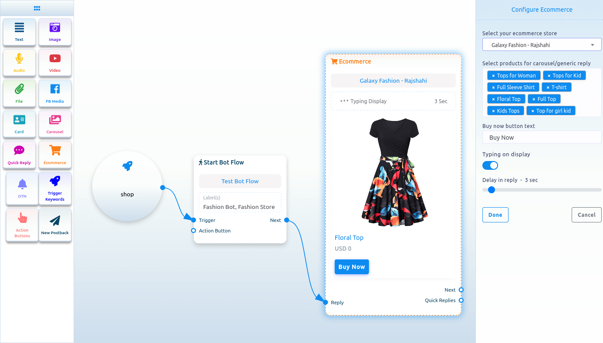OTN
To add OTN component, drag the OTN component from the doc-menu and drop on the editor. Instantly, the OTN component will appear on the editor.
Now double-click on the OTN component and a right sidebar called configure OTN with two fields will appear.
First, you have to write a title for the OTN component in the title field. Then you have to select a predefined OTN postback from the OTN postback id field.
Also, you can enable typing on display and select delay time in seconds.
Then click on the Done button.
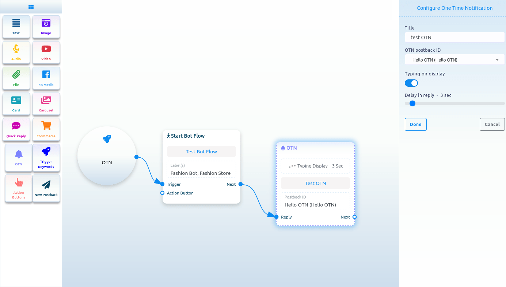Create OTN postback
If you don’t have any predefined OTN postback, you have to create an OTN postback first. To create OTN postback, select New OTN from the drop-down menu of the OTN postback ID field. And click on the Done button.
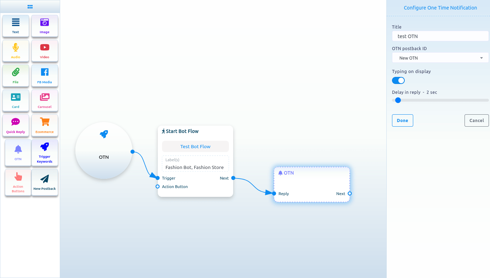Now click on the New OTN component and a right sidebar called Configure New OTN will appear with some fields. Give a template name in the template name fields and choose labels in the labels field. You can enable typing on display and select a delay time in reply in seconds. Then click on the done button. And the information will appear on the New OTN template.
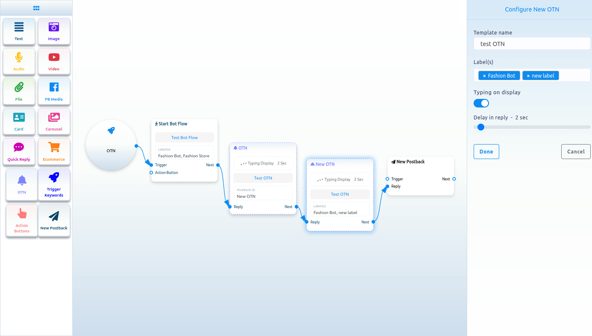Now click on the New postback Component and a right sidebar called configure new postback will appear with some fields. Give a title in the title field and choose labels in the Choose labels field. Now click on the done button. Now you have to connect a component with the new postback component. After that, click on the Save button and your bot with OTN will be saved.
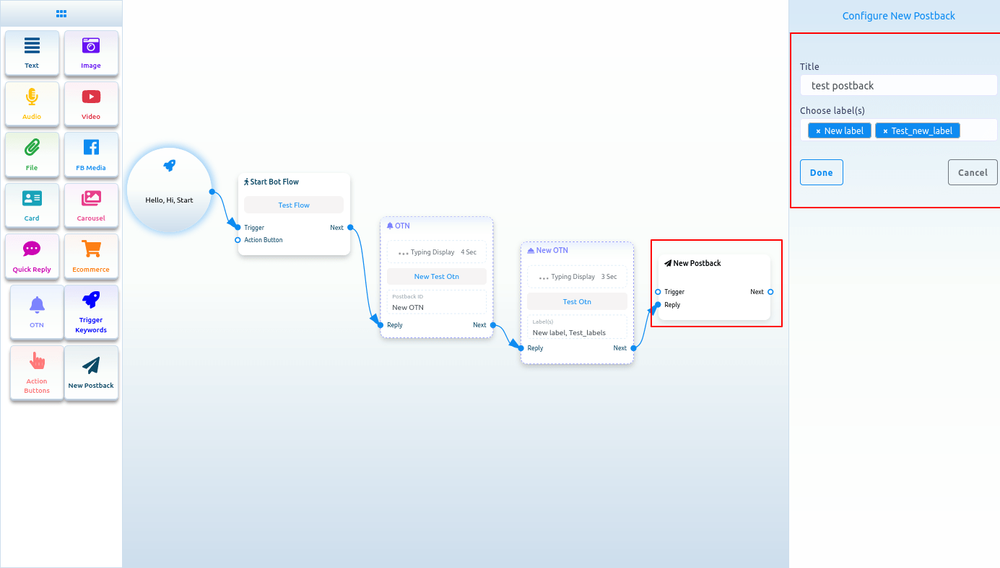Action buttons
To add Action Buttons component, drag the Action Button component from the Doc-menu and drop it on the editor. Instantly, the Action Buttons component will appear on the editor.
Now double-click on the Action Button component, and a right sidebar called Configure Action Button with a field called Action Button will appear. From the field, you have to select an Action button. Click on the Action Button field and drop-down menu of different Action Buttons – Get started template, No match template, Un-subscribe template, Re-subscribe template, Email quick reply template, Location quick reply template, Brithday quick reply template, Chat with human template, and Chat with robot template – will appear. Now you have to select an action button template from the drop-down menu. Then click on the done button. Instantly, the name of Action button template will appear on the Action button component.
Now you have to connect the action button component with the start bot flow component.